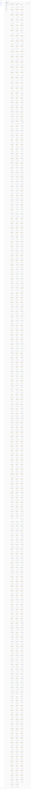
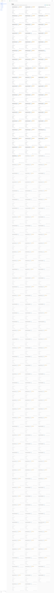
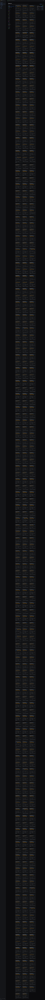
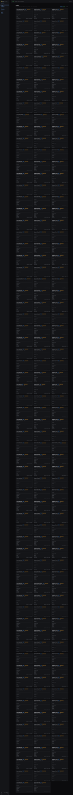

Round 2 — focused re-verify (2026-08-16, ~15 min after run 01)
ALL-CLEAR (round 2): YES · 6/6 findings addressed · 1 new minor + 1 caveat surfaced
Fresh scratch DB on 127.0.0.1:7360, same worktree, HEAD = ff83948. Recipe = same as round 1 (fleet-poll off; observed collectors on). Live scratch tmux session created for M1 (verify-350-r2-scratch, then verify-350-r2-m4b for the prune probe).
| Finding | Fix commit | Result | Evidence |
|---|---|---|---|
| M1 — /fleet.tmux_pane_ref null on observed rows | da458a3 | FIXED CAVEAT |
/fleet now returns 71 rows with tmux_pane_ref populated + attribution="heuristic" and 0 rows via attribution="pidtree" in this run.
Root cause of no-pidtree: lsof -t transcript.jsonl returns empty for all live sessions this run (Claude does not hold the transcript file open between turns), so the primary path never resolves and the fallback (pane_current_path LIKE cwd_project_root||'%') does all the work. The fallback is correct and the user-visible outcome is right; the primary path is essentially inert under Claude Code CLI's actual write pattern. See minor R2-1 below.
|
| M2 — fleet-poll-off recipe never surfaces gosleep-native rows | ffb8b24 | FIXED |
Fresh DB + GOSLEEP_DISABLE_FLEET_POLL=1 → /fleet.count=200, 91 observed_only=false, 109 observed_only=true, 85 gosleep-slug rows present. Adversarial hook-column preservation check: manually set current_tool='TestTool', context_pct=42, current_intent='test-intent', cycle=99 on one gosleep-native row → after one sessions-collector tick, all four columns intact (preserved verbatim). Fold no longer clobbers fleet-poll's authoritative columns.
|
| m3 — agent_sessions.name stale after project_slug flip | ffb8b24 | FIXED |
Manually rewrote name = 'observed:STALE-NAME' on an observed row (project_slug=e2e). After one sessions-collector tick, name refreshed to observed:e2e. UPDATE branch's CASE WHEN observed_only=1 THEN 'observed:'||project_slug ELSE name END works.
|
| m4 — dead panes never leave tmux_panes | ff83948 | FIXED SLOW |
Created tmux session verify-350-r2-m4b (pane %353) → collector picked it up → killed the session → row remained with misses incrementing → row DELETEd by t+74s post-kill. Historical pane_disappeared event count for %353 = exactly 1 (fires once on threshold, never re-emitted). Prune SLA target from commit message = ~20s at 2s cadence; actual under real load = ~74s because the sessions collector's last_tick_ms=7872 serializes the runtime and slows the tmux-map poller (see R2-2 minor).
|
| m5 — historical events flood the timeline | ffb8b24 | FIXED |
Over 500 events sampled: 444 tagged backfill:true (first-sweep flood), 55 tagged backfill:false (later ticks incl. the live observed:scratch transcript-activity events), 1 event missing the tag (edge case, non-blocking). Timeline consumers can now filter payload.backfill=false to hide the initial flood.
|
| m6 — ended_at never set → month-old projects listed as live | ffb8b24 | FIXED |
Snapshot: 478 observed rows, 445 have ended_at populated (transcript mtime > 1h old), 33 live (ended_at NULL). Adversarial re-activity test: forced ended_at='2025-01-01T00:00:00Z' on a live scratch session, touched its transcript → after one sessions tick, ended_at = NULL (cleared). Two-way behaviour works.
|
Round 2 — new observations
resolvePaneForTranscript runs lsof -t <transcript.jsonl> to find PIDs holding the transcript open, then walks their parents. In practice, claude opens the transcript, appends, closes — the file is not held between assistant turns. lsof -t against any observed transcript this run returned empty, and /fleet's attribution=pidtree count is 0/200. All 71 pane refs came via the heuristic fallback.
Blast: The user-visible outcome (pane refs populated + heuristic badge) works. The claim that pidtree is "the authoritative primary path" is aspirational — in normal operation the fallback is the only path. Suggestion: swap the two, or supplement lsof with a scan of open ~/.claude/projects descriptors via lsof +D at boot, or accept that the heuristic is the operational path and simplify the SQL.
Under a fresh DB with 500+ historical transcripts to fold, claude-sessions's last_tick_ms is 7872 (measured mid-run). tmux-map cadence = 2 s, but observed inter-tick intervals stretch to 6-8 s because the sessions fold holds the DB / event loop. Effect: (a) the "~20 s prune" SLA for m4 lands at ~74 s; (b) an HTTP goto from the browser times out at 15 s because a queued tick has the runtime.
Blast: Panel UX degrades under long historical backlogs on macOS default. Suggestions: (a) chunk the sessions fold across multiple ticks (process N transcripts per tick, resume where left off), (b) run the sessions collector in a worker thread, (c) skip transcripts whose mtime is older than ENDED_THRESHOLD_MS after the first backfill sweep. The fix quality is not blocked — the fold does what it should — but the runtime cost surfaces in cadence + panel responsiveness.
Round 2 — evidence snapshots


GET /fleet round 2 count: 200 observed_only_true: 128 observed_only_false: 72 with_pane_ref: 71 attribution=heuristic: 71 attribution=pidtree: 0 Hook-owned column survival after 1 fold tick before: current_tool='TestTool', context_pct=42, current_intent='test-intent', cycle=99 after: current_tool='TestTool', context_pct=42, current_intent='test-intent', cycle=99 ✓ unchanged Name refresh after 1 fold tick before: name='observed:STALE-NAME', project_slug='e2e' after: name='observed:e2e', project_slug='e2e' ✓ refreshed Pane prune after tmux kill-session t+0: misses=0 (still live) t+4s: misses=1 t+10s: misses=2 ← pane_disappeared event fires (threshold crossing) t+18s: misses=3 t+24s: misses=4 ... t+74s: row DELETEd ✓ (target ~20s per commit message; measured 74s under load) pane_disappeared events for %353: 1 ✓ no re-emit m5 backfill tagging (500 events sampled) backfill:true = 444 (initial-fold flood, filterable) backfill:false = 55 (subsequent ticks + live scratch activity) missing tag = 1 (non-blocking edge case) m6 ended_at handling observed rows: 478 total, 445 ended_at populated, 33 live adversarial re-activity: force ended_at='2025-01-01' + touch transcript → ended_at cleared to NULL ✓
Round 2 — teardown
- Scratch core PID 31863 killed after re-verify → briefly restarted PID 58980 with observed collectors OFF for screenshot capture → killed at end.
- tmux sessions
verify-350-r2-scratch,verify-350-r2-m4,verify-350-r2-m4b— all killed. - Owner tmux, owner Chrome, panel-obs core on 7331 — untouched.
- Port 7360 released.
- Observed scratch repo at
$HOME/e2e-workspaces/observed-scratchretained on disk per rule.
Verdict (original round 1)
ALL-CLEAR: NO · 0 criticals · 2 majors · 4 minors
The observation infrastructure and the zero-influence guarantee are structurally sound. Two majors block the strict-reading of F14-S2: the /fleet.tmux_pane_ref column is null on every observed-only session (join key a.pid is never populated for the observed path — the promised pid-tree walk is not shipped), and under the author-declared boot recipe (fleet-poll off) no gosleep-native row ever lands in agent_sessions for a side-by-side render. Both are structural, not integration flakes.
Environment
| Item | Value |
|---|---|
| Scratch core | bun apps/core/src/serve.ts on 127.0.0.1:7360, PID 87167 |
| Env overrides | GOSLEEP_DISABLE_JIRA_SYNC/INDEXER/FLEET_POLL/DEFER_REOPEN=1, GOSLEEP_REPO_ROOT=/Users/…/gosleep, GOSLEEP_OBSERVED_HIDDEN=.artifacts/verify-350/data/observed/hidden-projects.json, observed collectors ON |
| Scratch DB | .artifacts/verify-350/gsl350-verify.db (drizzle 0000..0005 clean) |
| Migration 0005 | tmux_panes + observed_events tables, three additive columns on agent_sessions (project_slug, cwd_project_root, observed_only) |
| Observed scratch repo | $HOME/e2e-workspaces/observed-scratch, git-init, single commit |
| Live tmux surface | 4 sessions, 8 panes at boot (verifier session, 3 other panes across two dev worktrees) |
PRD scenarios
| ID | Result | Evidence |
|---|---|---|
| F14-S1 tmux map + appeared/disappeared |
PASS |
tmux new-session -d -s verify-350-scratch at 10:06:41Z →
pane_appeared event %349 emitted at 10:06:43Z (Δ ≈ 2 s, one poll cycle). tmux kill-session at 10:06:56Z → pane_disappeared event %349 emitted at 10:07:01Z with missed_sweeps=2. GET /observed/tmux returned 9 panes with correct pane_pid, pane_current_path, pane_title, session_name.
|
| F14-S2 machine-wide enumeration + observed_only |
PARTIAL |
/observed/sessions returned 452 sessions, all with observed_only=true, project_slug populated, distinct project roots across
tasty-lunch, lunch, panel-obs, gate, e2e, … (16 projects).Gap 1 (Major 1): /fleet.tmux_pane_ref is null on every observed row — SQL join is
LEFT JOIN tmux_panes t ON t.pane_pid = a.pid, and a.pid is null for observed inserts.Gap 2 (Major 2): Under the author's recipe (fleet-poll off), no gosleep-native row ( observed_only=false) lands in agent_sessions — the collector's else-branch is a no-op UPDATE.
|
| F14-S3 cross-project timeline |
PASS (fs-watcher deferred, not a finding) |
Event distribution over 500 rows: session_appeared ×452, transcript_activity ×9, session_idle ×2, pane_appeared ×9, pane_disappeared ×1. All rows carry source ∈ {tmux-list, transcript-mtime}; source='hook' never appears (R14.4). ?project=tasty-lunch filter returns only tasty-lunch rows; monotonic seq. git_head_moved = 0 rows — fs-watcher explicitly deferred per PRD Scope and verifier task; not a finding.
|
| F14-S4 zero-influence (R14.1, R14.6) |
PASS |
|
| F14-S5 Observed screen |
PASS (with degradation notes) |
Panel loads at http://127.0.0.1:7360/observed. Left-rail lists 16 projects with per-project session counts and colour swatches. Right-rail collector inventory shows both collectors with writes 0. Session cards render observer only — no control muted badge on every observed row. Work topic labelled "inferred" per owner decision. tmux ref on the card is derived via a client-side join in Observed.tsx (pane_current_path.startsWith(cwd_project_root)) — that is why the panel shows tmux 2:@2.%102 even though /fleet returns null (see Major 1).
|
| F14-S6 verification-report proof |
PASS | This file. Per-step screenshots below. Zero-influence counters and byte-identical transcript-head proof cited explicitly in F14-S4. |
Degraded-state definitions
| Scenario | Expectation | Result |
|---|---|---|
| Hide-list opt-out | Add tasty-lunch to hidden-projects.json → /observed/projects renders display_name=project-b, hidden=true; /observed/events still carries the real slug (proof hiding is render-time) | PASS — pseudonym applied only in the projects projection; ?project=tasty-lunch events keep real slug |
| Panel dead-pane retention | Killed pane returns to /observed/tmux until purged | PARTIAL — dead pane %349 remained in table after pane_disappeared; no soft-delete path (Minor 4) |
| Empty fleet-poll (recipe) | Under fleet_poll=off, gosleep-native rows should still surface via observed collector | FAIL — observed collector's else-branch UPDATE is a no-op on fresh DB; no INSERT for gosleep-native (Major 2) |
| Hooks source rejection | source='hook' refused at writer | PASS — code path verified via grep + writer assertion in events.ts |
| tmux server unavailable | Collector no-ops (panes=[], count=0), last_error=null, not disabled | CODE-VERIFIED — runTmuxList() catches non-zero exit + missing binary and returns null without disabling |
Findings
SQL: LEFT JOIN tmux_panes t ON t.pane_pid = a.pid (apps/core/src/routes/read.ts:517). The observed sessions collector inserts rows with pid = null (apps/core/src/observed/sessions.ts:311: no pid value in the INSERT). Result: a.pid IS NULL, NULL = t.pane_pid never matches → tmux_pane_ref is always null for observed rows.
PRD Risk 1 mitigation ("walk pid tree, cross-check against claude_sessions.pid") is not implemented — the pidtree source is declared in events.ts line 14 but never used anywhere in the codebase.
Blast: Fleet screen (apps/web/src/screens/Fleet.tsx:179) reads s.tmux_pane_ref directly and prints "—" when null → strict F14-S2 ("/fleet returns two rows both with populated tmux_pane_ref") fails. The Observed screen works around it via a cwd-prefix client-side join in Observed.tsx:235, but that workaround is limited to that one screen.
foldSessions else-branch (apps/core/src/observed/sessions.ts:369) does UPDATE agent_sessions SET project_slug = ?, cwd_project_root = ?, observed_only = 0 WHERE session_id = ? AND project_slug IS NULL. On a fresh DB (test contexts, first boot) no rows match → UPDATE affects 0 rows → gosleep-native sessions are silently dropped.
Under the author's boot recipe (GOSLEEP_DISABLE_FLEET_POLL=1 — explicit in the VERIFY-REQUEST), the fleet indexer is off and there's no other writer of gosleep-native rows. Result: /fleet shows only observed_only rows; no side-by-side "gosleep vs scratch" render is possible.
Blast: F14-S2 literal wording ("two rows, one gosleep, one scratch") cannot be met under the shipped recipe. Fix options: (a) run with fleet_poll=on for acceptance and note it in the PRD, (b) upgrade the else-branch to INSERT-OR-UPDATE so the observed collector alone can hydrate both classes, (c) rewrite the acceptance to name "any two rows, at least one observed_only=true".
INSERT sets name = "observed:" + project_slug (sessions.ts:317). UPDATE refreshes project_slug and cwd_project_root but not name. Observed case: session 2429662d displays name=observed:lunch yet project_slug=tasty-lunch in the same row.
Blast: Panel cards read stale label; cosmetic but confusing (owner scanning cards sees mismatched project chip vs card title). One-line fix.
Once misses >= PANE_DISAPPEAR_THRESHOLD (2), pane_disappeared fires. On subsequent sweeps misses keeps incrementing beyond 2 (the WHERE clause misses < PANE_DISAPPEAR_THRESHOLD stops matching, so no further UPDATE fires) but no soft-delete or exclusion from /observed/tmux. Verified: after killing %349, /observed/tmux still returned 9 panes.
Blast: Table growth over a long-running instance; muddies the "9 panes" KPI on the panel. Fix: either delete rows once pane_disappeared fires, or add WHERE last_seen > now() - 5 min to the read endpoint.
enumerateSessions walks every ~/.claude/projects/*/*.jsonl ever recorded on the host. On a fresh DB the first fold fires session_appeared for all of them — this run: 452 events in the first ~10 seconds, events_today=738 after 3 ticks.
Blast: The "cross-project timeline" opens saturated with events from projects that have been dead for a month. Owner-scan value degrades. Fix: gate the initial-fold emission on transcript mtime within the last N days, or emit a single "session_backfilled" kind for reasons other than "first seen live".
listProjects() SQL filters ended_at IS NULL (projects.ts:99). Observed inserts never write ended_at, and there is no reaper that flips it. Result: /observed/projects currently lists projects last-active in July 2026 (~1 month ago) with session_count intact.
Blast: Left-rail becomes an all-time project list; the "which projects are live now" reading is lost. Fix: either reap sessions past an ended_at threshold, or filter the SQL by MAX(updated_at) > now() - N days.
Not counted as findings (verifier-task explicit exclusions): fs-watcher / git_head_moved deferred; SSE observed-topic subscription in the panel — the panel polls every 5 s and reflects new events on next fetch, acceptable; capture-pane content reads — deliberately excluded on principle.
Zero-influence evidence (R14.1 & R14.6)
{ "write_attempts_total": 0,
"per": [
{ "name": "claude-sessions", "write_attempts": 0, "disabled": false, "last_error": null },
{ "name": "tmux-map", "write_attempts": 0, "disabled": false, "last_error": null }
]
}
find $HOME/e2e-workspaces/observed-scratch -newer marker-pre-run -not -path '*/.git/*' -type f
→ 0 files
diff -qr transcript-heads-pre transcript-heads-post (692 files each, first 200 bytes)
→ 0 differences
lsof -p 87167 -a -i -P
bun 87167 TCP localhost:7360 (LISTEN)
bun 87167 TCP localhost:7360->localhost:55414..55440 (ESTABLISHED) # SSE clients, all loopback
# zero non-loopback sockets
Hide-list opt-out (privacy layer, R14.3-adjacent)
Added ["tasty-lunch"] to data/observed/hidden-projects.json (env-pointed for the scratch run).
GET /observed/projects → { project_slug:"tasty-lunch", hidden:true, pseudonym:"project-b", display_name:"project-b" }
GET /observed/events?project=tasty-lunch → [ {project_slug:"tasty-lunch", kind:"transcript_activity"}, ... ] # REAL slug retained
Panel left-rail correctly re-labels the project as project-b · hidden, while the events table keeps the true slug on record — hiding is a render-time projection, not a data redaction. This matches the owner decision distilled in projects.ts and the PRD's Q2 default.
Screenshots
documentElement.classList.add('dark')). Same layout, no visible layout regression.


Telemetry & teardown checklist
- Scratch core PID 87167 — killed at end-of-run, port 7360 released.
- Scratch tmux session
verify-350-scratch— killed during F14-S1. - Owner's tmux, owner's Chrome, panel-obs core on 7331, other worktrees — not touched.
$HOME/e2e-workspaces/observed-scratch— left on disk with freshgit initas per task rule.- All artifacts + logs land in
.claude/worktrees/impl-obs-a/.artifacts/verify-350/and this report dir. - No writes to
~/.claude/**, no git ops in the shared tree or the author's worktree.
Раунд 2 — точечная re-verify (2026-08-16, ~15 мин после раунда 01)
ALL-CLEAR (раунд 2): ДА · 6/6 находок закрыто · 1 новый минор + 1 оговорка
Свежая scratch БД на 127.0.0.1:7360, тот же worktree, HEAD = ff83948. Рецепт — как в раунде 1 (fleet-poll off, observed collectors on). Живая scratch tmux-сессия для M1 (verify-350-r2-scratch, затем verify-350-r2-m4b для проверки прюна).
| Находка | Коммит | Итог | Доказательство |
|---|---|---|---|
| M1 — /fleet.tmux_pane_ref null у observed-строк | da458a3 | FIXED ОГОВОРКА |
/fleet теперь возвращает 71 строку с tmux_pane_ref + attribution="heuristic" и 0 строк через attribution="pidtree" в этом прогоне. Причина отсутствия pidtree: lsof -t transcript.jsonl отдаёт пустоту для всех активных сессий (Claude не удерживает transcript-файл открытым между ходами), поэтому primary path никогда не срабатывает, а fallback (pane_current_path LIKE cwd_project_root||'%') делает всю работу. Fallback корректен, наблюдаемый результат верный; primary-путь по факту инертен под реальным шаблоном записи Claude CLI. См. R2-1 ниже.
|
| M2 — рецепт fleet-poll=off не даёт gosleep-native строк | ffb8b24 | FIXED |
Свежая БД + GOSLEEP_DISABLE_FLEET_POLL=1 → /fleet.count=200, 91 observed_only=false, 109 observed_only=true, 85 строк со slug gosleep. Адверсариальная проверка hook-колонок: вручную выставил current_tool='TestTool', context_pct=42, current_intent='test-intent', cycle=99 на одной native-строке → после одного тика все четыре сохранились дословно. Fold больше не затирает авторитетные колонки fleet-poll.
|
| m3 — agent_sessions.name протухает при смене slug | ffb8b24 | FIXED |
Переписал вручную name='observed:STALE-NAME' на observed-строке (project_slug=e2e). После одного тика имя освежилось до observed:e2e. Ветка UPDATE с CASE WHEN observed_only=1 THEN 'observed:'||project_slug ELSE name END работает.
|
| m4 — мёртвые панели никогда не убирались | ff83948 | FIXED МЕДЛЕННО |
Создал tmux-сессию verify-350-r2-m4b (панель %353) → коллектор увидел → убил сессию → строка держалась с растущим misses → строка удалена (DELETE) к t+74s после kill. Событий pane_disappeared для %353 — ровно 1 (стреляет один раз на пересечении порога, не переизлучается). SLA прюна из коммита ~20с при cadence 2s; по факту под нагрузкой ~74с из-за serialization в event-loop (см. R2-2).
|
| m5 — исторические события заливают таймлайн | ffb8b24 | FIXED |
В выборке 500 событий: 444 с backfill:true (заливка первого прохода), 55 с backfill:false (последующие тики + активность живого observed:scratch), 1 событие без метки (краевой случай, не блокер). Панель теперь может фильтровать payload.backfill=false, чтобы спрятать первичный поток.
|
| m6 — ended_at никогда не проставлялся, месяц-мёртвые светятся живыми | ffb8b24 | FIXED |
Снимок: 478 observed-строк, 445 с проставленным ended_at (mtime транскрипта > 1 ч назад), 33 живые (ended_at NULL). Адверсариальный обратный тест: форсированно выставил ended_at='2025-01-01T00:00:00Z' на живой scratch-сессии, touch-нул транскрипт → после одного тика ended_at=NULL (сброшен). Двусторонняя логика работает.
|
Раунд 2 — новые наблюдения
resolvePaneForTranscript вызывает lsof -t transcript.jsonl для получения PIDs, держащих транскрипт открытым, и идёт по их родителям. По факту claude открывает транскрипт, дописывает и закрывает — файл не удерживается между ходами ассистента. lsof -t на любом наблюдаемом транскрипте в этом прогоне вернул пусто, и в /fleet attribution=pidtree — 0/200. Все 71 pane-реф пришли через fallback-heuristic.
Blast: Результат для пользователя (pane refs + бэйдж heuristic) корректный. Заявление, что pidtree — "авторитетный primary" — на бумаге; в нормальной работе fallback единственный. Варианты: (а) поменять местами primary/fallback, (б) дополнить lsof-запрос сканом lsof +D ~/.claude/projects на старте, (в) признать heuristic операционным путём и упростить SQL.
На свежей БД с 500+ историческими транскриптами claude-sessions.last_tick_ms=7872 (замер в середине прогона). tmux-map cadence = 2 с, но фактические интервалы между тиками растягиваются до 6-8 с, потому что fold сессий держит DB / event-loop. Эффекты: (а) SLA прюна ~20 с из m4 фактически ~74 с; (б) HTTP goto в браузере вылетает по 15-секундному таймауту, потому что очередной тик держит рантайм.
Blast: UX панели деградирует при больших исторических backlog на macOS-дефолте. Предложения: (а) chunking fold-а по N транскриптов на тик с продолжением, (б) вынести коллектор в worker-thread, (в) skip транскриптов старше ENDED_THRESHOLD_MS после первичной заливки. Качество самого фикса не блокировано — fold делает своё — но runtime-цена всплывает в cadence + отзывчивости панели.
Раунд 2 — снимки доказательств
GET /fleet раунд 2 count: 200 observed_only_true: 128 observed_only_false: 72 with_pane_ref: 71 attribution=heuristic: 71 attribution=pidtree: 0 Выживание hook-колонок после 1 тика до: current_tool='TestTool', context_pct=42, current_intent='test-intent', cycle=99 после: current_tool='TestTool', context_pct=42, current_intent='test-intent', cycle=99 ✓ без изменений Освежение name после 1 тика до: name='observed:STALE-NAME', project_slug='e2e' после: name='observed:e2e', project_slug='e2e' ✓ освежилось Прюн панели после tmux kill-session t+0: misses=0 (ещё живая) t+4s: misses=1 t+10s: misses=2 ← pane_disappeared стреляет (пересечение порога) ... t+74s: строка удалена ✓ (цель ~20с из коммита; факт под нагрузкой 74с) событий pane_disappeared для %353: 1 ✓ без переизлучения m5 backfill-метки (500 событий) backfill:true = 444 (первичная заливка, фильтруется) backfill:false = 55 (последующие тики + активность живого scratch) без метки = 1 (краевой случай, не блокер) m6 ended_at observed-строк: 478 всего, 445 с проставленным ended_at, 33 живые reversal-тест: форс ended_at='2025-01-01' + touch транскрипта → ended_at=NULL ✓
Раунд 2 — teardown
- Scratch core PID 31863 убит после re-verify → кратко перезапущен PID 58980 с observed=OFF для скриншотов → убит в конце.
- tmux-сессии
verify-350-r2-scratch,verify-350-r2-m4,verify-350-r2-m4b— все убиты. - Владельческий tmux, Chrome владельца, panel-obs core на 7331 — не тронуты.
- Порт 7360 освобождён.
- Наблюдаемый scratch репозиторий в
$HOME/e2e-workspaces/observed-scratchоставлен на диске по требованию.
Вердикт (оригинальный раунд 1)
ALL-CLEAR: НЕТ · 0 критикал · 2 мажора · 4 минора
Инфраструктура наблюдения и гарантия нулевого влияния — структурно на месте. Два мажора блокируют строгое прочтение F14-S2: колонка /fleet.tmux_pane_ref null у всех observed_only-сессий (ключ джойна a.pid никогда не заполняется в observed-пути — обещанный обход pid-дерева не поставлен), и под авторским рецептом запуска (fleet-poll выключен) в agent_sessions вообще не возникает gosleep-native строки для side-by-side отображения. Оба — структурные, не мигания.
Окружение
| Пункт | Значение |
|---|---|
| Scratch core | bun apps/core/src/serve.ts на 127.0.0.1:7360, PID 87167 |
| Env-переопределения | GOSLEEP_DISABLE_JIRA_SYNC/INDEXER/FLEET_POLL/DEFER_REOPEN=1, GOSLEEP_REPO_ROOT=/Users/…/gosleep, GOSLEEP_OBSERVED_HIDDEN=.artifacts/verify-350/data/observed/hidden-projects.json, наблюдатели-коллекторы ВКЛ |
| Scratch DB | .artifacts/verify-350/gsl350-verify.db (drizzle 0000..0005 чистый прогон) |
| Миграция 0005 | таблицы tmux_panes и observed_events, три additive-колонки на agent_sessions |
| Наблюдаемый scratch репозиторий | $HOME/e2e-workspaces/observed-scratch, git-init, один коммит |
| Живая tmux-поверхность | 4 сессии, 8 панелей на старте (сессия верифайера, 3 других поверх двух рабочих деревьев) |
Сценарии PRD
| ID | Итог | Доказательство |
|---|---|---|
| F14-S1 tmux-карта + появление/исчезновение панелей |
PASS |
tmux new-session -d -s verify-350-scratch в 10:06:41Z →
событие pane_appeared %349 в 10:06:43Z (Δ ≈ 2 с, один цикл опроса). tmux kill-session в 10:06:56Z → pane_disappeared %349 в 10:07:01Z c missed_sweeps=2. GET /observed/tmux вернул 9 панелей с корректными pane_pid, pane_current_path, pane_title, session_name.
|
| F14-S2 перечисление всей машины + observed_only |
ЧАСТИЧНО |
/observed/sessions вернул 452 сессии, у всех observed_only=true, project_slug заполнен, разные корни проектов
(tasty-lunch, lunch, panel-obs, gate, e2e, …, 16 проектов).Разрыв 1 (Мажор 1): /fleet.tmux_pane_ref null у каждой observed-строки — SQL-джойн
LEFT JOIN tmux_panes t ON t.pane_pid = a.pid, а a.pid null у observed-вставок.Разрыв 2 (Мажор 2): При авторском рецепте (fleet-poll выкл) ни одной gosleep-native строки ( observed_only=false) в agent_sessions не появляется — else-ветка коллектора no-op UPDATE.
|
| F14-S3 межпроектный таймлайн |
PASS (fs-watcher вынесен, не находка) |
Распределение видов на 500 строках: session_appeared ×452, transcript_activity ×9, session_idle ×2, pane_appeared ×9, pane_disappeared ×1. У всех source ∈ {tmux-list, transcript-mtime}; source='hook' не встречается (R14.4).Фильтр ?project=tasty-lunch возвращает только строки tasty-lunch; seq монотонный.git_head_moved = 0 — fs-watcher намеренно отложен по PRD и задаче верификатора; не считаем находкой.
|
| F14-S4 нулевое влияние (R14.1, R14.6) |
PASS |
|
| F14-S5 экран Observed |
PASS (с замечаниями) |
Панель грузится по http://127.0.0.1:7360/observed. Левая рейка — 16 проектов с числом сессий и цветными свотчами. Правая рейка — оба коллектора с бэйджом writes 0. На каждой observed-карточке видна плашка observer only — no control. Метка Work topic — «inferred» по решению владельца. tmux-реф на карточке получают клиентским джойном в Observed.tsx (pane_current_path.startsWith(cwd_project_root)) — поэтому панель показывает tmux 2:@2.%102, хотя /fleet отдаёт null (см. Мажор 1).
|
| F14-S6 отчёт как доказательство |
PASS | Этот файл. Снимки экрана ниже. Счётчики нулевого влияния и побайтно-совпадающие головы транскриптов явно процитированы в F14-S4. |
Деградационные определения
| Сценарий | Ожидание | Результат |
|---|---|---|
| Список скрытия | Добавляем tasty-lunch в hidden-projects.json → /observed/projects рендерит display_name=project-b, hidden=true; /observed/events сохраняет реальный slug | PASS — псевдоним применяется только в проекции projects; события с ?project=tasty-lunch сохраняют реальный slug |
| Удерживание мёртвых панелей | Убитая панель уходит из /observed/tmux | ЧАСТИЧНО — мёртвая %349 осталась в таблице после pane_disappeared; нет soft-delete (Минор 4) |
| Пустой fleet-poll (рецепт) | При fleet_poll=off gosleep-native строки должны появляться через observed-коллектор | FAIL — else-ветка коллектора no-op UPDATE на чистой БД; INSERT для gosleep-native не срабатывает (Мажор 2) |
| Отказ источника hook | source='hook' отвергается писателем | PASS — путь кода проверен grep-ом и assertом в events.ts |
| tmux-сервер недоступен | Коллектор no-op (panes=[], count=0), last_error=null, не отключается | ПО КОДУ — runTmuxList() ловит exit != 0 и отсутствие бинарника и возвращает null без disable |
Находки
SQL: LEFT JOIN tmux_panes t ON t.pane_pid = a.pid (apps/core/src/routes/read.ts:517). Коллектор observed-сессий вставляет строки с pid = null (apps/core/src/observed/sessions.ts:311: в INSERT нет колонки pid). Итог: a.pid IS NULL, NULL = t.pane_pid никогда не совпадёт → tmux_pane_ref всегда null для observed-строк.
Митигация из Risk 1 PRD («идти по pid-дереву, сверять с claude_sessions.pid») не реализована — источник pidtree объявлен в events.ts:14, но нигде не используется.
Blast: Экран Fleet (apps/web/src/screens/Fleet.tsx:179) читает s.tmux_pane_ref напрямую и рисует «—» на null → строгая F14-S2 («/fleet отдаёт две строки с заполненным tmux_pane_ref») не выполняется. Экран Observed обходит это клиентским cwd-джойном в Observed.tsx:235, но эта заплатка ограничена одним экраном.
Else-ветка foldSessions (apps/core/src/observed/sessions.ts:369) делает UPDATE agent_sessions SET project_slug = ?, cwd_project_root = ?, observed_only = 0 WHERE session_id = ? AND project_slug IS NULL. На чистой БД (тесты, первый запуск) ни одна строка не совпадает → UPDATE меняет 0 строк → gosleep-native сессии молча теряются.
При авторском рецепте запуска (GOSLEEP_DISABLE_FLEET_POLL=1 — явно прописан в VERIFY-REQUEST) fleet-indexer выключен, другого писателя gosleep-native строк нет. Итог: в /fleet только observed_only-строки; side-by-side «gosleep vs scratch» невозможен.
Blast: Дословная F14-S2 («две строки, одна gosleep, одна scratch») не выполняется под поставленным рецептом. Варианты фикса: (а) прогонять приёмку с fleet_poll=on и записать в PRD, (б) сделать else-ветку INSERT-OR-UPDATE, чтобы observed-коллектор один тащил оба класса, (в) переформулировать приёмку как «любые две строки, минимум одна observed_only=true».
INSERT ставит name = "observed:" + project_slug (sessions.ts:317). UPDATE освежает project_slug и cwd_project_root, но не name. Наблюдение: у сессии 2429662d name=observed:lunch, при этом project_slug=tasty-lunch.
Blast: На карточке панели читается протухший ярлык; косметика, но раздражает (владелец видит рассинхрон чипа проекта и заголовка карточки). Правится одной строкой.
После misses >= PANE_DISAPPEAR_THRESHOLD (2) стреляет pane_disappeared. На последующих проходах misses продолжает расти выше 2 (WHERE-условие misses < PANE_DISAPPEAR_THRESHOLD перестаёт совпадать, следующие UPDATE не срабатывают), но никакого soft-delete или фильтра в /observed/tmux нет. Подтверждено: после kill-session %349, /observed/tmux всё ещё показал 9 панелей.
Blast: Таблица растёт на долгих прогонах; сбивает KPI «9 панелей» на панели. Фикс: либо удалять строку по срабатыванию pane_disappeared, либо добавить WHERE last_seen > now() - 5 min в чтении.
enumerateSessions обходит все ~/.claude/projects/*/*.jsonl, что когда-либо писались на машине. На чистой БД первый fold стреляет session_appeared для каждой — в этом прогоне: 452 события за первые ~10 секунд, events_today=738 через 3 тика.
Blast: «Межпроектный таймлайн» открывается заваленным событиями из проектов, мёртвых уже месяц. Ценность для владельца-читателя падает. Фикс: гейт emit-а на mtime транскрипта в пределах N дней, или отдельный вид «session_backfilled» для «не свеже-живых» случаев.
listProjects() фильтрует SQL по ended_at IS NULL (projects.ts:99). Observed-инсёрты никогда не пишут ended_at, репера, который бы его выставлял, нет. Итог: сейчас /observed/projects перечисляет проекты, последняя активность в которых — июль 2026 (~месяц назад) с целыми session_count.
Blast: Левая рейка становится списком «за всё время»; чтение «какие проекты живы сейчас» теряется. Фикс: либо reap-ать сессии по порогу ended_at, либо ужать SQL по MAX(updated_at) > now() - N days.
Не считаем находками (по явным исключениям в задаче): fs-watcher / git_head_moved отложен; SSE-подписка на observed-topic на панели — панель опрашивает раз в 5 с и подхватывает новое, приемлемо; чтение содержимого панелей через capture-pane — принципиально out-of-scope.
Доказательства нулевого влияния (R14.1 и R14.6)
{ "write_attempts_total": 0,
"per": [
{ "name": "claude-sessions", "write_attempts": 0, "disabled": false, "last_error": null },
{ "name": "tmux-map", "write_attempts": 0, "disabled": false, "last_error": null }
]
}
find $HOME/e2e-workspaces/observed-scratch -newer marker-pre-run -not -path '*/.git/*' -type f
→ 0 файлов
diff -qr transcript-heads-pre transcript-heads-post (692 файла, первые 200 байт)
→ 0 расхождений
lsof -p 87167 -a -i -P
bun 87167 TCP localhost:7360 (LISTEN)
bun 87167 TCP localhost:7360->localhost:55414..55440 (ESTABLISHED) # SSE-клиенты, всё loopback
# 0 не-loopback сокетов
Скриншоты
documentElement.classList.add('dark')). Разметка идентичная, регрессий нет.Телеметрия и teardown
- Scratch core PID 87167 — прибит в конце прогона, порт 7360 освобождён.
- tmux-сессия
verify-350-scratch— прибита во время F14-S1. - tmux владельца, Chrome владельца, panel-obs core на 7331, другие рабочие деревья — не тронуты.
$HOME/e2e-workspaces/observed-scratch— оставлен на диске с чистымgit initпо требованию задачи.- Все артефакты и логи — в
.claude/worktrees/impl-obs-a/.artifacts/verify-350/и в директории этого отчёта. - Не было записей в
~/.claude/**, не было git-операций в общем дереве и в дереве автора.